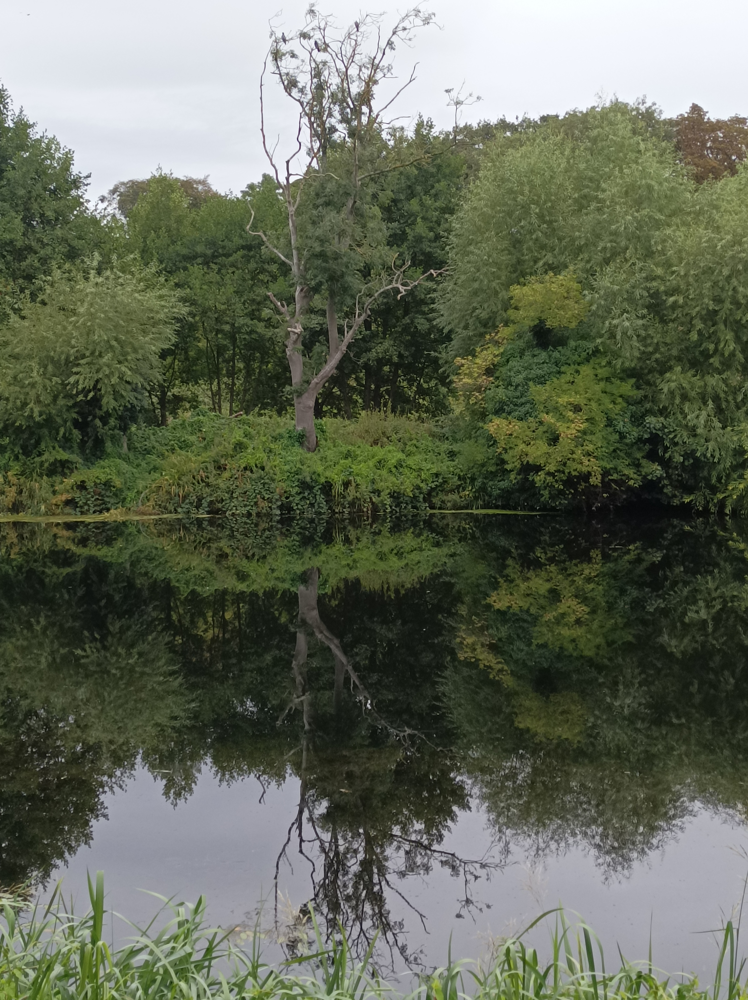

Poolbeg
0759, Sunday 28 Aug, 2022
I had no intention of coming to Poolbeg Lighthouse today but I got a nasty dose of sunrise fomo and I ended up here, chasing the light. The plan was to do a re-run of yesterday’s cycle, stalling in from Blanch to Grand Canal Dock, where I would aim for another dark coffee and bright pastry in Il Valentino, with the aim of writing about yesterdo’s joyous, identikit trip. But the clouds were out today and I needed some Vitamin Tree, so I decided to do the river run instead, along the Strawberry Beds, snaking through Chapelizard and following the southside cycle path towards Islandbridge. As I was making my way to the Strawberry Beds, over a dull suburban bridge, I saw a patch of post-sunrise beauty over in Sunny Cabra to the west. Now Cabra is not known for its beauty, but when you are cycling along the Navan road, downhill into Town, and the stars are aligned, the place lights up like an afterparty in Ibiza, and you can see how this proto-dual-carriageway slash dynamic car park, which is actually lined with incongruently large houses, may have once been a broad avenue of trees, horses and opulent outdoor breakfasts. Today wasn’t quite one of those days, but there was enough sun to give me some morning glowry, and I ached to see that blob of nice light to my distant left in the sea of grey clouds above.
I moseyed on inanyways towards Islandbridge and I took a few snaps of a riverbank whose leafy round undersides bounced back out of the river, and I reflected on how anything irregular can be made beautiful simply by mirroring it. How anything irregular can be made beautiful by simply mirroring it.

There was a triathlon centred around one of the rowing clubs too and I thought about investigating it, seeing as I have been thinking about a) doing triathlons, and b) reporting on random events, but I thought better of it as I remembered that my actual goal is to talk shite about my own journeys, and I’ll start reporting about other people’s once that project runs out of juice. So that had me on Conyngham Road approaching Parkgate St and another of my favourite views in Dear Dirty Dzublin, the quays on a bright day. Or, as it was today, light at the end of the river, with grey clouds all around, as though the buildings had a blurred reflection in the sky. Finally I was en route to the sunlight so I kept going, towards Grand Canal Dock, as planned, although there was a random car parked on Ellis Quay, unmanned, and with its hazard lights flashing, so I stopped and called the cops, cos God only knows what was going on. The quays did their thing after that, opening up into the broader docks, with the water and sky casting redyellowblue joy onto the grey city, and the big buildings being pleasingly far away from another, leaving space for the soul to breathe, like they do in Berlin.
So I decided to chase the light instead of stopping for coffee in Grand Canal, although I felt like the proverbial dog chasing after a bicycle, as sky faded to grey. I crossed over the scaldyball East Link Toll bridge, a rundown beggar of a road that ought to be ashamed of itself for asking people to pay to cross it. It is rare reminder of the visual state of Ireland back in the 1990s, like looking at the moustaches in the Walkinstown Roundabout video after we beat Romania in Italia 90.
Yet its griminess bled neatly into Dublin Port which I had to wind through for a click or two, past the disused Ice Cream Factory, officially known as the Poolbeg Chimneys, and on to the Poolbeg Lighthouse, via the Great South Wall, a 2k strech of fat cobblestones leading that made me feel like I was soloing to victory in Paris-Roubaix.
****
a familiar route to me. Stall it south via a buncha gaffs and roads, down to
to the Strawberry beds,
Due south from my gaff to the northern edge of the LIffey valley, down the hill, along the Strawberry Beds, over Knockmaroon hill, snaking through Chapelizard and along the southside cycle path towards Islandbridge.
and half thinking about going home to take the clothes off the line due to scattered droplets of wet rain,
which mercifully doesn’t charge cyclists, and should be ashamed of itself for taking cash off motorists.
which was getting away from me like the dog chasing a bicycle.
and as I approach Islandbridge, and thought about investigating the triathlon taking p
the views really do explain the
can be spectacular.
the Navan Road isn’t known for its beauty, but its sunrises can be spectacular, because if the stars align, then you are descending
this time I took the river route, under the trees and
but I took the green route, due south to the Strawberry
\I went in via The Strawberry Beds and Chapelizard